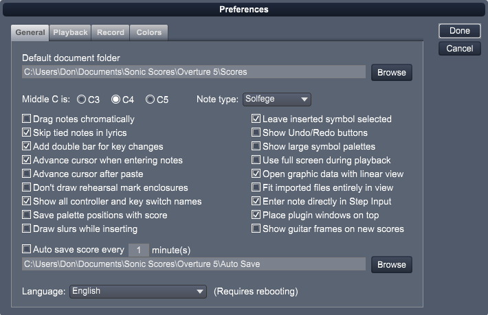

To view the general preferences, [click the General tab].
Use the check boxes to enable (check) or disable (uncheck) various general options. The following sections discuss these options.

Default document folder
Set this path to tell Overture where to open and save scores.
Middle C Is
Use this option to establish how Overture names middle C.
Note type
Use this option to establish how Overture names middle C.
Drag Notes Chromatically
Use this option to determine whether Overture changes notes chromatically or diatonically when you drag them in the Score View.
For more information, see Editing Notes.
Skip tied notes in lyrics
Use this option to specify that lyrics should treat tied notes as a single entity by placing only one word under the first of the tied notes.
Add double bar for key changes
Use this option to insert double bar lines automatically before key changes.
Advance cursor when entering notes
Use this option if you want the mouse cursor to automatically move to the next note position after entering a note or rest with the mouse.
Advance cursor after paste
Use this option if you want the mouse cursor to automatically move to the next end of the pasted section.
Don't draw rehearsal mark enclosures
Use this option if you do want an enclosure draw around rehearsal marks.
Show all controller and key switch names in menus
Use this option if you want all names to be shown in the pop-up menus when choosing controllers and key switches. If this option is unchecked only the appropriate names will be shown for the current track and voice.
Save palette positions with score
Use this option if you want Overture to save the current palette states with a score. This will tell Overture to restore the palette states when the score is opened.
Draw slurs while inserting
Use this option if you want to draw the actual slur curve when using the Slur Tool. If not selected, the Slur Tool will be used to select the notes first and then attach a slur to them.
Leave inserted symbol selected
Use this option if you want the new inserted symbol to remain selected. This allows you to reposition or delete the symbols using your computer keyboard,
Show Undo/Redo buttons
Use this option if you want Undo and Redo buttons to be shown on the Control Bar. This is useful for touch screen computers that are not using a keyboard,
Show large symbol palettes
Use this option to enlarge the symbol palettes when you are using a high definition monitor and the palette symbols appear small,
Use full screen during playback
Use this option to enlarge the symbol palettes when you are using a high definition monitor and the palette symbols appear small.
Open graphic data with linear view
Use this option if you want the Graphic Data view to open when switching to Linear view.
Fit imported files entirely in view
Use this option to have Overture fit the entire score in the view after importing,
Enter Notes directly in Step Input
Use this option to have Overture enter the note immediately after you type a pitch (A-G)
Place plugin windows on top
Use this option to force plugin windows to remain on top of your main window. If, they will be moved behind when you click on the main window.
Show guitar frames on new scores
Use this option if you want to have chords shown with their guitar fingering on new scores,
Auto Save Score Every [x] Minutes
Use this option if you want to backup your score at a set interval. Set the path to tell Overture where to save the scores as a backup.